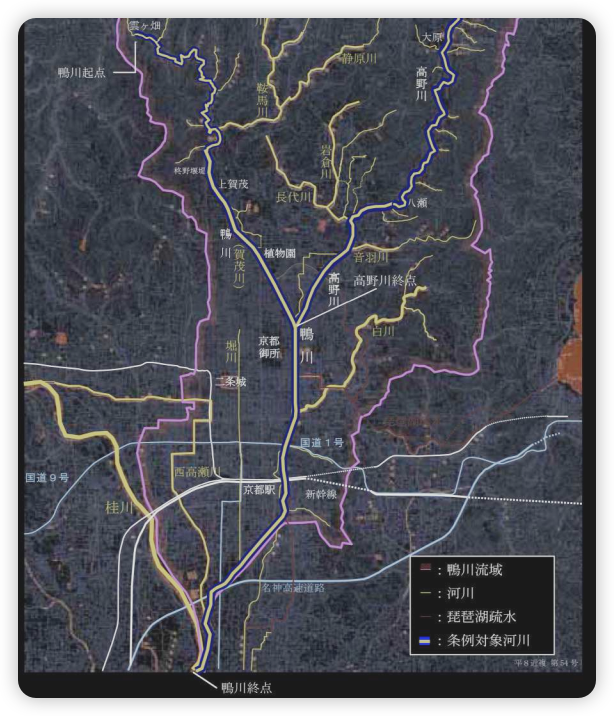
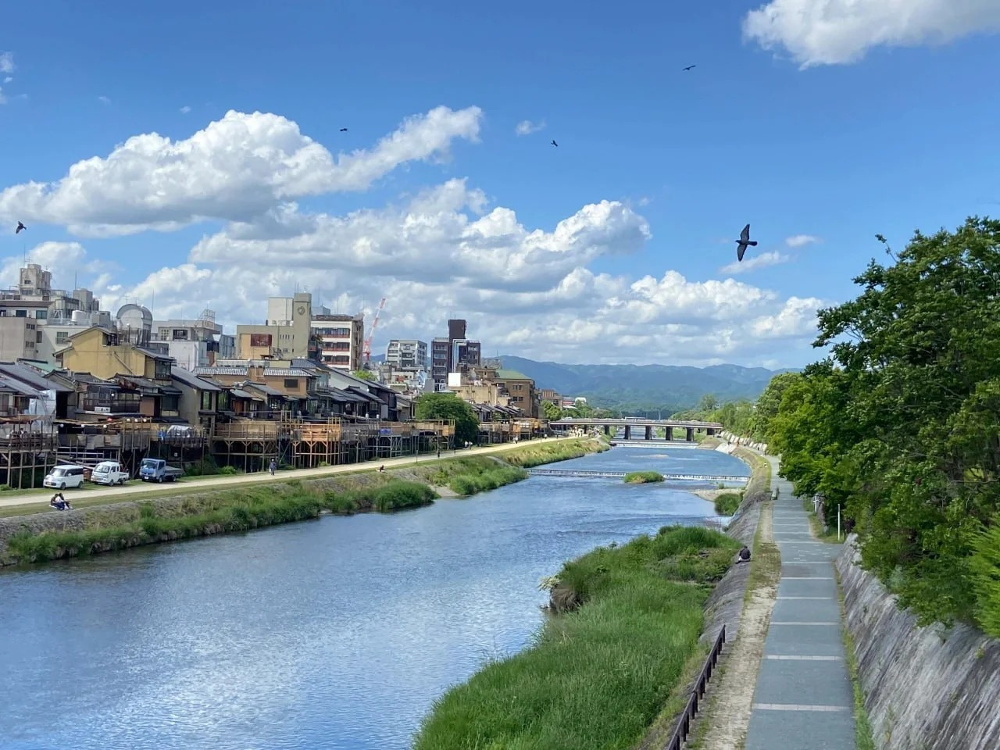
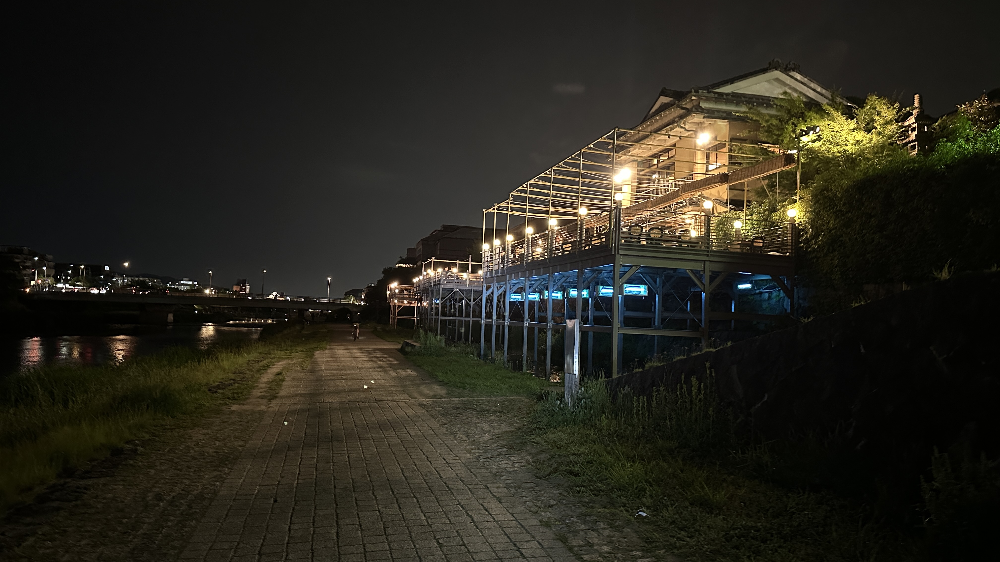
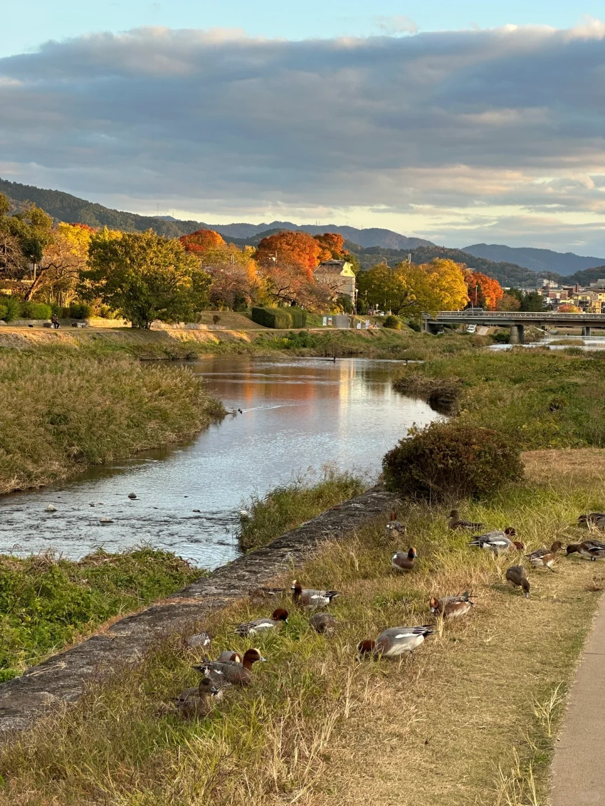
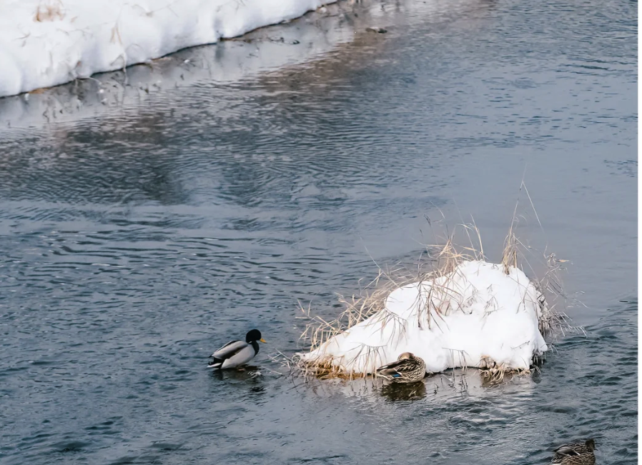

鴨川について
京都を流れる鴨川は、単なる川ではありません。それは京都の歴史、文化、そして豊かな自然が息づく生命線です。
2.1 歴史と起源
鴨川は、京都市の北部に位置する桟敷ヶ岳（さじきがたけ）を源流とし、京都市内を南へ流れ、桂川と合流して淀川へと注ぎます。全長は約33kmです。
平安京の造営以来、鴨川は都の生活に欠かせない存在であり、人々の暮らし、文化、信仰と深く結びついてきました。古くから水害に見舞われることもありましたが、そのたびに治水工事が行われ、現在の姿へと至っています。
鴨川の歴史年表
- **平安時代**：都の建設、鴨川の治水が始まる
- **江戸時代**：納涼床（のうりょうゆか）の文化が発展
- **近代**：都市化と環境問題、そして保護活動の始まり
2.2 環境と水系
鴨川の生態系は、上流の山間部から中流の市街地、下流の合流地点まで、多様な環境を持っています。
- **上流**：豊かな森林に囲まれ、清流が多くの動植物を育んでいます。
- **中流**：市街地を流れる区間ですが、広々とした河川敷や草木が生い茂る中州があり、都市のオアシスとして機能しています。
- **下流**：他の川との合流により水量が豊富になり、さらに多様な生物が生息しています。
鴨川流域地図
（鴨川の主要な流れと地域を示す地図）
2.3 四季の風景
鴨川は四季折々で異なる表情を見せ、訪れる人々を魅了します。

**春：桜並木** - 両岸に咲き誇る桜は、鴨川をピンク色に染め上げます。

**夏：納涼床と蛍** - 夕涼みを楽しむ納涼床が並び、夜には蛍が舞うことも。

**秋：紅葉** - 周囲の山々や、川沿いの木々が鮮やかに色づきます。

**冬：雪景色と水鳥** - 静寂に包まれた雪景色と、多くの水鳥たちが訪れる季節です。